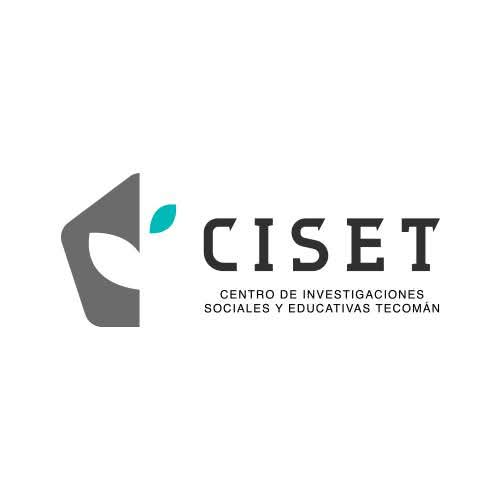
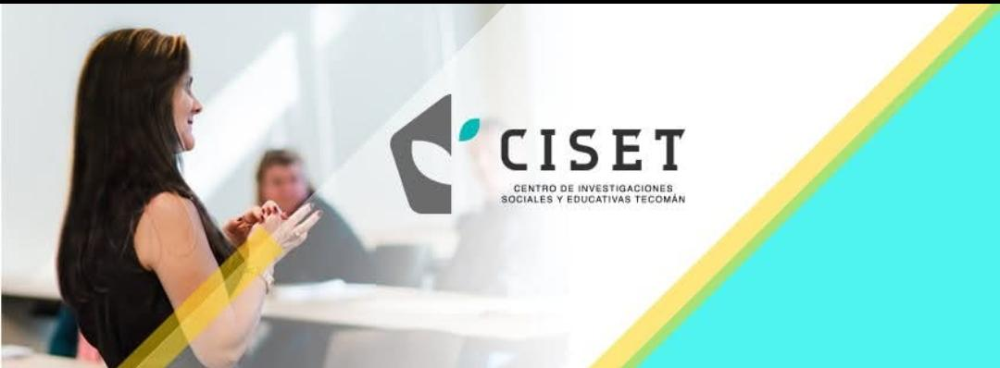
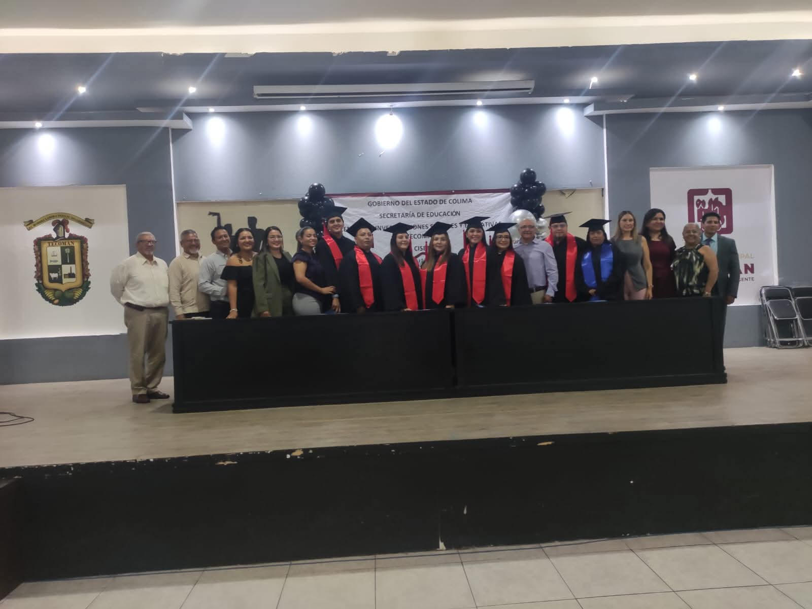
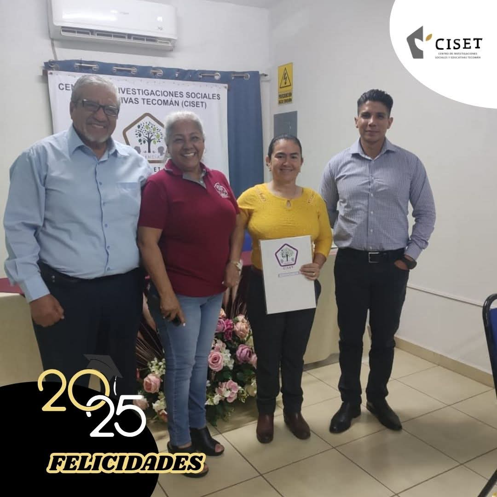
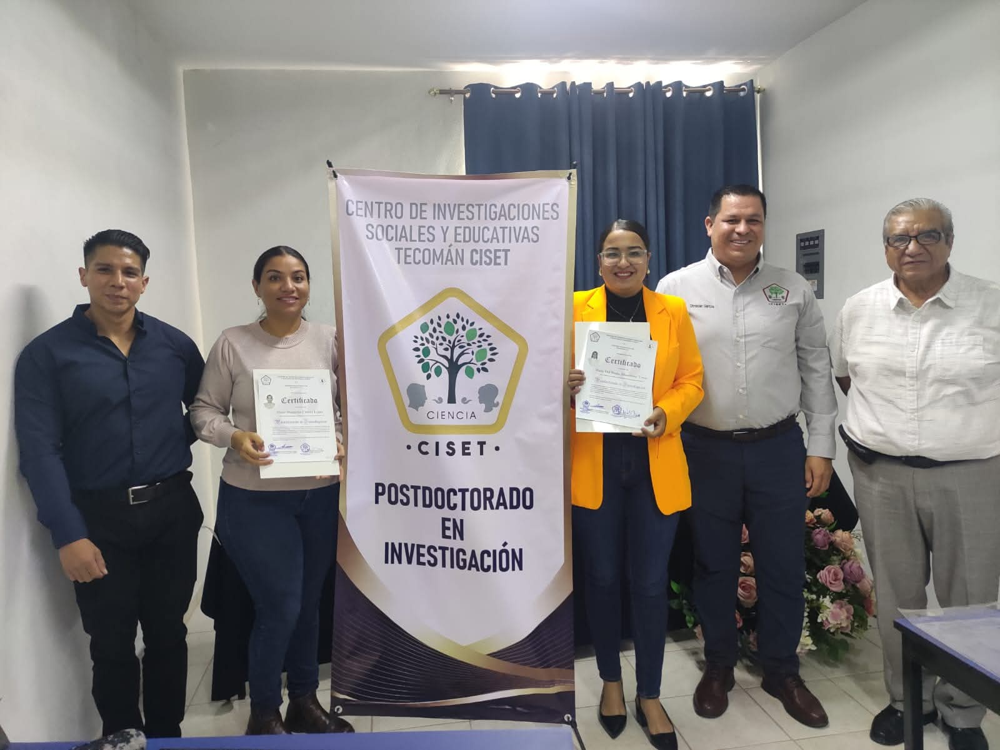

Seminarios ejecutivos
Horarios flexibles para profesionales que combinan trabajo, docencia e investigación.

CISET Maestrías y doctorados
Convocatoria 2026 abierta
Maestrías y doctorados para profesionales que buscan transformar comunidades, instituciones y procesos educativos desde la investigación aplicada.
Modelo académico
Horarios flexibles para profesionales que combinan trabajo, docencia e investigación.
Sesión gratuita por Zoom para alumnos, con espacios de diálogo enfocados en fortalecer distintos temas con enfoque educativo.
Acceso a recursos académicos, materiales especializados y consulta bibliográfica para apoyar el aprendizaje y la investigación.
Sesiones presenciales los sábados para avanzar con acompañamiento académico continuo.
CISET
Maestría
Formación para analizar, mejorar e innovar procesos educativos con enfoque social.
4 semestresEspecialidad
Prepara perfiles capaces de coordinar, evaluar y fortalecer espacios educativos.
2 semestresPosdoctorado
Programa avanzado para consolidar producción académica y proyectos de alto impacto.
2 semestresDoctorado
Desarrolla investigación original para responder a retos educativos contemporáneos.
5 semestresValidación de estudios
Si ya cursaste asignaturas de posgrado o necesitas validar documentos, nuestro comité académico revisa tu historial, créditos y compatibilidad con el programa elegido.
Testimonios de egresados



"El acompañamiento del comité tutorial me ayudó a convertir una idea dispersa en una tesis publicable y con aplicación en mi escuela."
Dra. Mariana Soto
Doctorado en Educación
"La maestría me dio herramientas para dirigir proyectos con datos, presupuesto y una visión más humana del liderazgo."
Mtro. Daniel Ruiz
Maestría en Educación
"Pude validar parte de mis estudios previos y avanzar con un plan claro. El proceso fue ordenado y muy transparente."
Mtra. Laura Méndez
Especialidad en Administración de Centros de Aprendizaje
Investigación aplicada
Proceso
Comparte tu programa de interés, trayectoria académica y disponibilidad.
Conversa con un coordinador para alinear objetivos y posible línea de investigación.
Recibe tu carta de aceptación, plan de pagos y opciones de apoyo institucional.
Asesoría personalizada
Un asesor académico puede orientarte sobre requisitos, becas, horarios y el perfil de ingreso de cada programa.
Calle Portugal #47, Col. Jardines del Chamizal, Tecomán, Colima, C.P. 28140